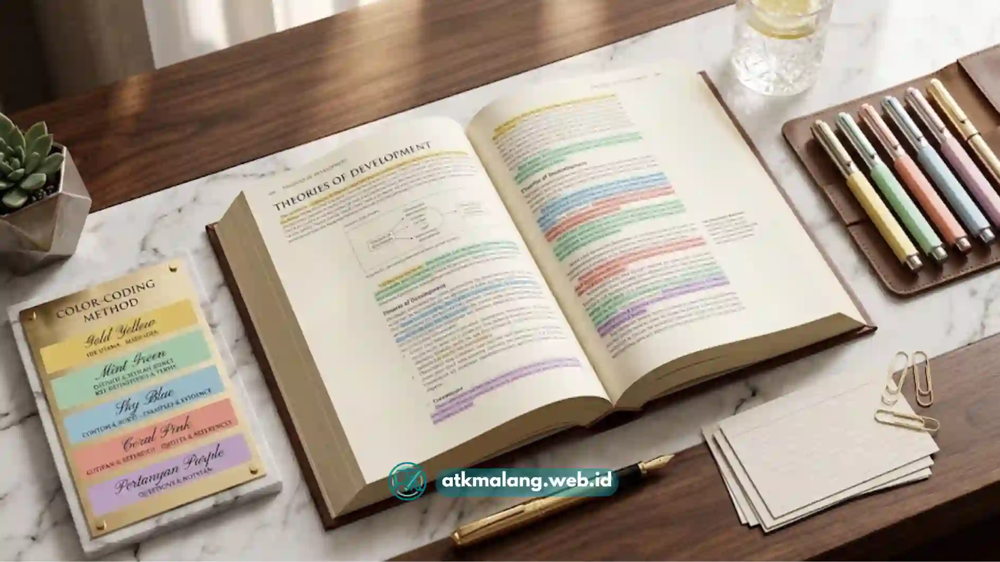

Cara memberi highlight buku yang efektif adalah dengan menandai bagian yang benar-benar penting saja, menggunakan sistem warna yang konsisten, dan menuliskan kembali inti highlight dengan kata sendiri.
- Highlight hanya kata kunci atau kalimat inti, bukan seluruh paragraf
- Gunakan maksimal dua sampai tiga warna stabilo dengan makna yang konsisten
- Baca dulu satu bagian penuh sebelum menentukan apa yang perlu ditandai
- Kombinasikan highlight dengan catatan pinggir agar lebih mudah diingat
- Review highlight secara berkala, bukan hanya sekali saat membaca
Daftar Isi
- Mengapa Highlight Buku Penting untuk Belajar?
- Bagaimana Cara Memberi Highlight Buku yang Efektif?
- Berapa Banyak Bagian yang Sebaiknya Di-highlight?
- Sistem Warna Apa yang Sebaiknya Digunakan?
- Apa Kesalahan Umum saat Menandai Buku dengan Stabilo?
- Bagaimana Mengombinasikan Highlight dengan Metode Belajar Lain?
- Tips Memilih Alat Tulis untuk Highlight Buku
Mengapa Highlight Buku Penting untuk Belajar?
Highlight yang tepat sasaran membantu mata langsung menemukan poin penting saat buku dibuka kembali, sehingga waktu belajar ulang menjadi lebih singkat.
Highlight juga berfungsi sebagai penanda visual yang memisahkan informasi utama dari penjelasan pendukung, sehingga struktur materi terlihat lebih jelas.
Bagi banyak pelajar, highlight bukan sekadar mempercantik buku, melainkan bagian dari proses aktif memahami isi bacaan.
Saat seseorang berhenti sejenak untuk memutuskan bagian mana yang layak ditandai, otak secara tidak langsung sedang memproses dan mengevaluasi informasi tersebut.
Namun, highlight yang berlebihan justru bisa membuat halaman terlihat penuh warna tanpa arah, sehingga fungsi aslinya sebagai penanda hilang.
Oleh karena itu, teknik yang tepat menjadi penentu apakah highlight benar-benar membantu proses belajar atau justru mengaburkan fokus.
Bagaimana Cara Memberi Highlight Buku yang Efektif?
Cara paling efektif adalah membaca satu bagian secara utuh terlebih dahulu, baru kemudian kembali untuk menandai kalimat atau frasa yang memuat inti gagasan.
Langkah ini penting karena saat pertama kali membaca, seseorang belum tahu bagian mana yang benar-benar penting dan mana yang hanya penjelasan tambahan.
Jika langsung menandai sambil membaca, hasilnya cenderung terlalu banyak highlight yang tidak selektif.
Setelah memahami alur bacaan, barulah highlight difokuskan pada:
- Definisi atau istilah kunci
- Kalimat yang menyimpulkan sebuah gagasan
- Data, angka, atau fakta penting
- Poin yang berbeda dari pemahaman awal pembaca
Dengan urutan ini, highlight menjadi representasi dari pemahaman, bukan sekadar reaksi spontan terhadap kalimat yang terlihat penting sekilas.
Berapa Banyak Bagian yang Sebaiknya Di-highlight?
Sebagai patokan umum, highlight sebaiknya tidak lebih dari sekitar sepuluh hingga dua puluh persen dari total teks pada satu halaman.
Jika lebih dari itu, highlight cenderung kehilangan fungsinya sebagai penanda prioritas.
Halaman yang hampir seluruhnya berwarna membuat mata sulit membedakan mana yang benar-benar krusial dan mana yang sekadar pendukung.
Untuk membantu membatasi jumlah highlight, beberapa pendekatan yang bisa dicoba:
- Menandai maksimal satu hingga dua kalimat per paragraf
- Menghindari highlight pada kalimat pembuka yang bersifat pengantar
- Fokus pada kata kunci, bukan seluruh kalimat, jika memungkinkan
- Menyisakan ruang putih di halaman sebagai jeda visual
Pendekatan ini membuat highlight tetap informatif tanpa membuat halaman terasa penuh sesak.

Gunakan kombinasi warna dan catatan pinggir untuk memperkuat daya ingat saat belajar.Sistem Warna Apa yang Sebaiknya Digunakan?
Sistem warna yang efektif adalah yang konsisten dan memiliki makna tetap, misalnya satu warna untuk definisi, dan satu warna untuk contoh kasus.
Menggunakan terlalu banyak warna tanpa aturan yang jelas justru dapat membingungkan, karena otak perlu mengingat arti dari setiap warna.
Sebaliknya, sistem warna yang sederhana dan konsisten di semua buku catatan akan mempercepat proses membaca ulang di kemudian hari.
Contoh sistem warna yang umum digunakan pelajar:
- Kuning untuk definisi atau istilah utama
- Hijau untuk contoh atau ilustrasi
- Merah muda atau oranye untuk data, angka, atau fakta penting
- Biru untuk hal yang perlu ditanyakan lebih lanjut
Sistem ini bisa disesuaikan dengan preferensi masing-masing, selama digunakan secara konsisten dari satu buku ke buku lainnya.
Apa Kesalahan Umum saat Menandai Buku dengan Stabilo?
Kesalahan paling umum adalah menandai terlalu banyak bagian karena merasa semua terlihat penting saat pertama kali membaca.
Kesalahan lain yang sering terjadi antara lain:
- Highlight dilakukan sambil membaca cepat tanpa jeda untuk berpikir
- Warna digunakan secara acak tanpa makna yang konsisten
- Highlight tidak pernah dibaca ulang setelah sesi belajar selesai
- Menandai seluruh kalimat, bukan hanya kata kunci di dalamnya
- Menggunakan stabilo dengan tinta yang terlalu tebal sehingga teks asli sulit terbaca
Menyadari kesalahan ini menjadi langkah awal memperbaiki kebiasaan highlight agar lebih terarah dan mendukung proses belajar secara nyata.
Bagaimana Mengombinasikan Highlight dengan Metode Belajar Lain?
Highlight akan jauh lebih efektif jika dikombinasikan dengan catatan pinggir singkat dan sesi review berkala, bukan dijadikan satu-satunya metode belajar.
Beberapa cara mengombinasikannya:
- Menuliskan satu kata kunci di margin halaman sebagai penanda tambahan
- Membuat rangkuman singkat dari seluruh highlight di akhir bab
- Menutup buku dan mencoba mengingat isi highlight tanpa melihat halaman
- Menggunakan sticky notes untuk menandai halaman dengan highlight terpadat
Kombinasi ini membantu memindahkan informasi visual menjadi pemahaman yang tersimpan dalam ingatan jangka panjang.
Tips Memilih Alat Tulis untuk Highlight Buku
Memilih stabilo atau spidol highlighter yang tepat turut memengaruhi kenyamanan dan hasil akhir highlight pada buku bacaan Anda.
Beberapa hal yang perlu diperhatikan saat memilih Alat Tulis Kantor untuk keperluan ini:
- Pilih ujung tinta yang sesuai, chisel tip untuk highlight lebar dan fine tip untuk detail kecil
- Perhatikan tingkat transparansi tinta agar teks asli tetap terbaca jelas
- Pertimbangkan tinta yang cepat kering agar tidak menembus atau menodai halaman sebelahnya
- Sesuaikan jumlah warna dengan sistem highlight yang sudah direncanakan, bukan sekadar mengikuti tren
Alat tulis yang nyaman digunakan akan membuat proses menandai buku terasa lebih ringan dan tidak terburu-buru.
Highlight buku yang efektif bukan tentang seberapa banyak warna yang dipakai, melainkan seberapa selektif dan konsisten sistem yang digunakan.
Membaca dulu sebelum menandai, membatasi jumlah, dan menetapkan makna warna adalah kunci utama agar highlight benar-benar membantu proses belajar.